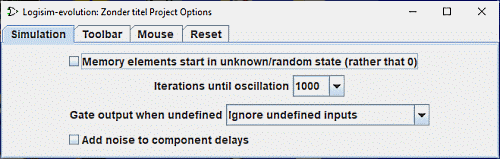

Logisim-evolution 支持两类配置选项： 应用程序首选项 和 项目选项 。 应用程序首选项涉及跨越所有打开项目的首选项，而项目选项特定于该项目。 本节讨论项目选项； 应用程序首选项 在另一节中描述。
您可以通过 | Project | → | Options... | 查看和编辑项目选项。 它会打开带有几个选项卡的“选项”窗口。

我们将分别讨论每个选项卡。
模拟选项卡 工具栏选项卡 鼠标选项卡 重置选项卡
下一步： 模拟选项卡 。